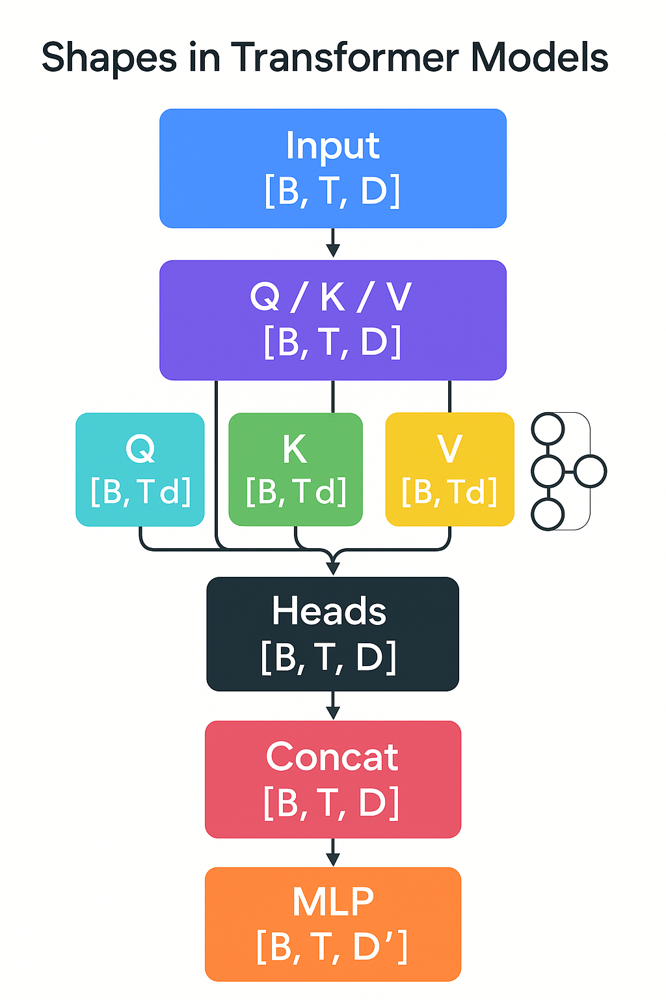

Tensors in Large Language Models

Table of Contents
- What is a Tensor?
- Shapes, Dtypes, Layout
- LLM Canonical Shapes (B, T, D)
- Embeddings & Tokenization Tensors
- Attention Tensors (Q, K, V, Heads)
- Position & Time: Positional/Timestep Tensors
- KV Cache: Memory vs Throughput
- Feedforward/MLP Tensors
- Training-Time Tensors (Grads, Optimizer States)
- Tensor Parallelism & Sharding
- Quantization, Low-Rank & MoE
- Tensor Core Math: Throughput Reality
- Debugging by Shape: Common Pitfalls
- Mini Cheatsheet
What is a Tensor?
A tensor is just a multi-dimensional array with: - shape (sizes along each axis), - dtype (numeric type: fp32, bf16, fp8, int8…), - layout/stride (how it’s stored/stepped in memory).
In LLMs, almost every operation is tensor algebra: embedding lookups, batched matmuls, convolutions over time (attention), non-linearities, normalizations.
⸻
⸻
Shapes, Dtypes, Layout
Shape examples: - [B, T, D] = batch, sequence length, hidden width. - [B, nH, T, Dh] = per-head attention (nH heads, head dim Dh). - [V, D] = vocab embedding table.
Dtype trade-offs: - fp32 training is precise but slow/memory-heavy. - bf16/fp16: standard for training. - int8/fp8: inference-oriented, needs calibration. - NF4/FP4: ultra-low precision quant for weights/activations.
Layout: - row-major vs col-major affects BLAS kernels. - contiguous vs strided: non-contiguous hurts kernel efficiency. - packed heads: [B, T, nH, Dh] vs [B, nH, T, Dh] can change memory locality.
⸻
⸻
LLM Canonical Shapes (B, T, D)
- Input tokens:
X_ids: [B, T] - Embeddings:
E: [V, D]→X: [B, T, D] - Self-Attention:
- project to Q, K, V: each
[B, T, nH, Dh]whereD = nH * Dh - attention weights:
[B, nH, T, T] - head concat:
[B, T, D]
- project to Q, K, V: each
- MLP/FFN:
- expand:
[B, T, D] → [B, T, 4D](often), activate, contract back to[B, T, D]
- expand:
⸻
⸻
⸻
Embeddings & Tokenization Tensors
- Token embeddings:
E_tok: [V, D] - Optional sub-tables: special tokens, adapters, soft prompts
E_soft: [P, D] - Output (LM head): often tied:
E_out = E_tok^T→ logits[B, T, V]
Memory note: V is large (e.g., 128k). Tying weights saves parameters; logit matmul dominates when V is huge.
⸻
⸻
⸻
Attention Tensors (Q, K, V, Heads)
Given input X: [B, T, D]:
- Linear projections:
Q = X W_Q,K = X W_K,V = X W_VW_*: [D, D](or[D, nH*Dh])- Reshape →
[B, T, nH, Dh]
- Scaled dot-product per head:
Scores = (Q ⋅ K^T) / sqrt(Dh)→[B, nH, T, T]Attn = softmax(Scores)Out_head = Attn ⋅ V→[B, nH, T, Dh]- Concat heads →
[B, T, D], project withW_O: [D, D]
FlashAttention collapses softmax + matmuls with tiling to cut memory traffic from [T, T] intermediates.
⸻
⸻
⸻
Position & Time: Positional/Timestep Tensors
- Absolute: learned table
P: [T_max, D]added to embeddings. - Sinusoidal: analytic
[T, D]functions. - RoPE: complex rotation of Q/K in head-dim space; no extra params, but needs consistent rotation shapes: apply on
[B, T, nH, Dh]. - ALiBi: bias over distance, avoids explicit position vectors.
All are tensors aligned on the T axis and broadcast over B and nH.
⸻
⸻
⸻
KV Cache: Memory vs Throughput
For autoregressive inference, we store past K, V: - Cache shape per layer: [B, nH, T_total, Dh] for both K and V. - Memory cost (rough): 2 * L * B * nH * T_total * Dh * dtype_size. - Trade-offs: - Larger T_total → faster per-token (reuse past) but high RAM/VRAM. - Quantized KV (int8/fp8) cuts memory; must keep accuracy. - Paged KV/block-KV organizes cache as fixed blocks to reduce fragmentation
⸻
⸻
⸻
Feedforward/MLP Tensors
Typical gated GLU/SiLU FFN: - Expand: W1: [D, D_ff], W3: [D, D_ff], then silu(X W1) ⊙ (X W3) - Project back: W2: [D_ff, D] - Shapes: - Activations: [B, T, D_ff] (often D_ff ≈ 4D) - Params: D*D_ff dominates per layer.
⸻
⸻
⸻
Training-Time Tensors (Grads, Optimizer States)
- Gradients: same shape as weights.
- Adam/AdamW states:
m, v→ 2× the parameter memory. - Mixed precision: master fp32 weights + bf16 activations.
- Activation checkpointing reduces saved activations (recompute in backward).
Rule of thumb: training memory ≈ params (fp16/bf16) + optimizer (≈2× params fp32) + activations (batch-/sequence-dependent).
⸻
⸻
⸻
Tensor Parallelism & Sharding
- Data parallel: replicate weights, split batches
[B]. - Tensor/model parallel: shard weight matrices along D or D_ff (Megatron-LM style).
- Pipeline parallel: split layers; micro-batches stream through.
- Sequence parallel: split T across devices (useful with long context).
- ZeRO: shard optimizer states/gradients/params across ranks.
Each choice changes the effective tensor shapes per device and the required all-reduce/all-gather patterns.
⸻
⸻
⸻
Quantization, Low-Rank & MoE
- Quantization:
- Weights/activations to int8/fp8/FP4/NF4.
- Tensor-wise vs group-wise scaling tensors (per-channel scales
[D]or[groups, …]).
- Low-Rank (LoRA/QLoRA):
- Replace
W ∈ ℝ^{D_out×D_in}withW + A BwhereA: [D_out, r],B: [r, D_in],r ≪ D.
- Replace
- MoE:
- Gating tensor
G: [B, T, nExperts](often top-k). - Expert FFNs see routed tokens: shapes become ragged; implement with packed blocks for kernel efficiency.
- Load-balancing loss acts on gating tensor statistics.
- Gating tensor
⸻
⸻
Tensor Core Math: Throughput Reality
- GPUs/TPUs peak on dense GEMMs with specific tile sizes.
- Best throughput when shapes are multiples of hardware tiles (e.g., 64/128).
- Fused kernels (RMSNorm → QKV → bias → RoPE) minimize reads/writes.
- Performance killers: non-contiguous tensors, tiny batch/head dims, excessive transposes.
⸻
⸻
Debugging by Shape: Common Pitfalls
- Q/K/V reshape/order mismatch:
[B, T, nH, Dh]vs[B, nH, T, Dh]. - RoPE applied on wrong dims or after projection merge.
- KV cache dtype/shape drift across tokens (e.g., bf16 vs fp16).
- Logits with tied weights: ensure
E_tokandLM_headshare transposed shape. - MoE routing: padding vs packing; silent throughput collapse if not packed.
⸻
⸻
Mini Cheatsheet
- Embeddings:
E[V, D], inputs →[B, T, D] - Attention heads:
nH = D / Dh, Q/K/V[B, T, nH, Dh] - Scores/attn:
[B, nH, T, T](fused via FlashAttention) - FFN:
D_ff ≈ 4D, shapes[B, T, D_ff] - KV cache / layer:
2 × [B, nH, T_total, Dh] - Adam states:
2 × params - LoRA rank r: extra params
r(D_in + D_out) - MoE gating:
G[B, T, nExperts], top-k Routing
⸻
⸻
Optional images to add
- A one-panel diagram of shapes through a transformer block.
- A KV cache memory budget bar chart (bf16 vs int8).
- A MoE routing sketch (gate → pack → expert FFNs → merge).